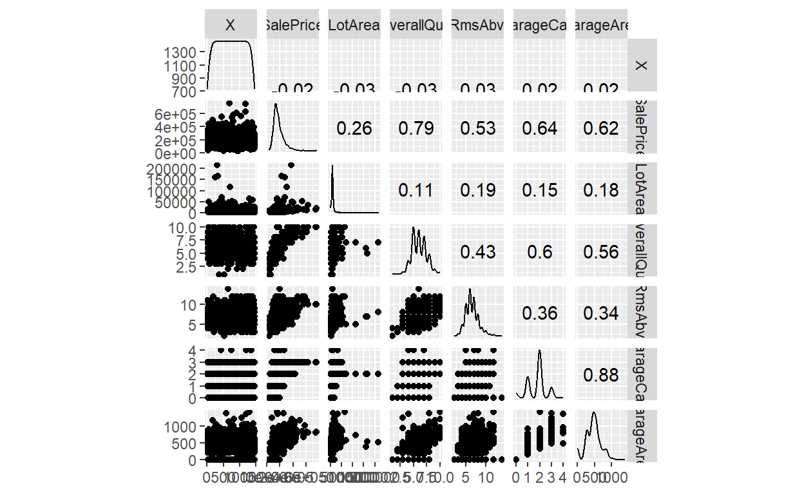
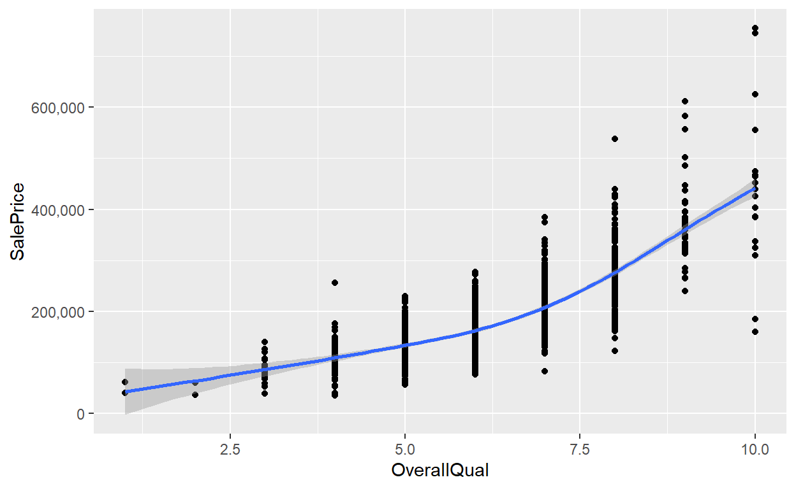
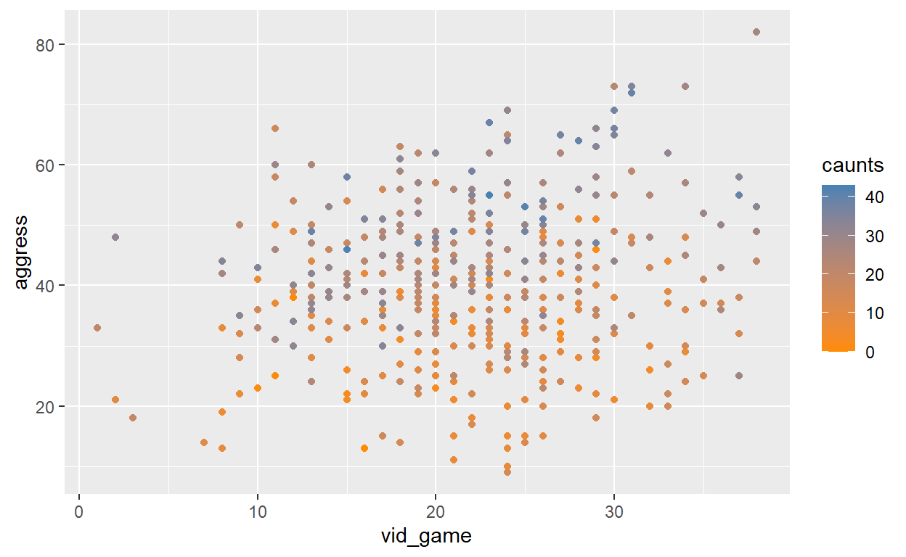
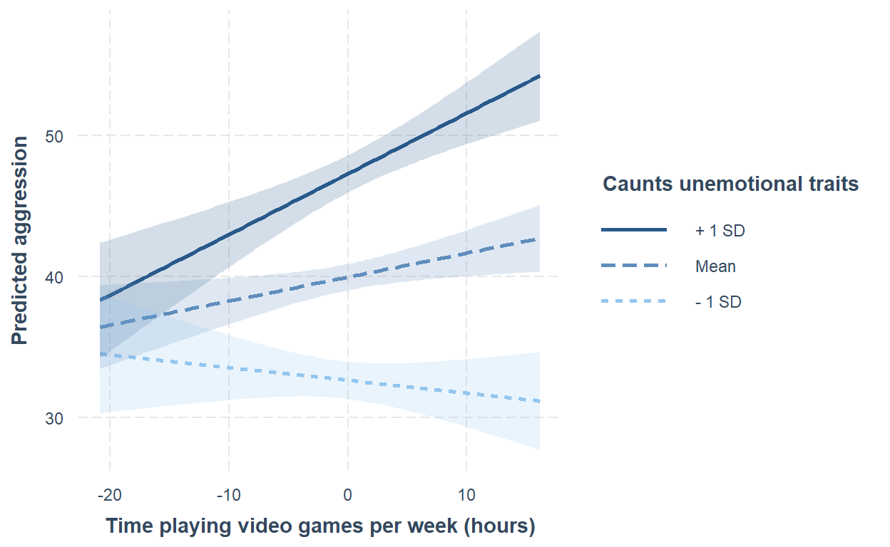

Reminder
Last week, we talk about the multicollinearity problem arising in the statistical analysis and regularization techniques, which are
Lasso
Ridge
Elastic Net
Today, we are talk about other important concepts for statistical analysis.
Install the packages using the code line given below.
install.packages("interaction")
We assume that you have already installed ggplot2,
GGally, dplyr,
car,gapminder packages.
Confounding
Confounding variables or confounders are often defined as the variables correlate (positively or negatively) with both the dependent variable and the independent variable. A confounder is an extraneous variable whose presence affects the variables being studied so that the results do not reflect the actual relationship between the variables under study.They lead to overestimate or underestimate the relationship between independent and dependent variable. In other words, a confounding variable is an important variable that should be included in the predictive model but you omit it. Naive interpretation of such models can lead to invalid conclusions.

Science Direct
When the inclusion or exclusion of a variable in an analysis leads to different results, it indicates the presence of confounding. To determine the presence of confounding, multiple linear regression can be used. After including a variable that is suspected to be a confounding variable, if the coefficients in the regression change significantly, then the added variable is indeed a confounding variable.
Recognizing the presence of a confounding factor in a study allows for adjustments in the study design or data analysis to eliminate the confounding effects from the final results. Simpson’s paradox, which is another instance of confounding, occurs when combining data from multiple groups into a single group causes a reversal in the direction of an association. I leave my article that explains the Simpson’s paradox by a real life example.
Covid-19 Aşıları ve Simpson Paradoksu
Strategies to reduce confounding are:
We can take precautions against confounding at design phase or analysis phase. The possible solutions are listed below.
randomization (aim is random distribution of confounders between study groups)
restriction (restrict entry to study of individuals with confounding factors - risks bias in itself)
matching (of individuals or groups, aim for equal distribution of confounders)
stratification (confounders are distributed evenly within each stratum)
adjustment (usually distorted by choice of standard)
multivariate analysis (only works if you can identify and measure the confounders)
Quiz
A study was done to compare the lung capacity of coal miners to the lung capacity of farm workers. The researcher studied 200 workers of each type. Other factors that might affect lung capacity are smoking habits and exercise habits. The smoking habits of the two worker types are similar, but the coal miners generally exercise less than the farm workers.
References
Pourhoseingholi, M. A., Baghestani, A. R., & Vahedi, M. (2012). How to control confounding effects by statistical analysis. Gastroenterology and hepatology from bed to bench, 5(2), 79 83.
Application 1
Read the conf_ex.csv dataset.
df<-read.csv("https://users.metu.edu.tr/ozancan/conf_ex.csv",header=T,sep=",")
head(df)Before proceeding, we start with calculating descriptive statistics as an initial step.
summary(df)## X SalePrice LotArea OverallQual
## Min. : 1.0 Min. : 34900 Min. : 1300 Min. : 1.000
## 1st Qu.: 365.8 1st Qu.:129975 1st Qu.: 7554 1st Qu.: 5.000
## Median : 730.5 Median :163000 Median : 9478 Median : 6.000
## Mean : 730.5 Mean :180921 Mean : 10517 Mean : 6.099
## 3rd Qu.:1095.2 3rd Qu.:214000 3rd Qu.: 11602 3rd Qu.: 7.000
## Max. :1460.0 Max. :755000 Max. :215245 Max. :10.000
## TotRmsAbvGrd GarageCars GarageArea
## Min. : 2.000 Min. :0.000 Min. : 0.0
## 1st Qu.: 5.000 1st Qu.:1.000 1st Qu.: 334.5
## Median : 6.000 Median :2.000 Median : 480.0
## Mean : 6.518 Mean :1.767 Mean : 473.0
## 3rd Qu.: 7.000 3rd Qu.:2.000 3rd Qu.: 576.0
## Max. :14.000 Max. :4.000 Max. :1418.0GGally::ggscatmat(df)## Registered S3 method overwritten by 'GGally':
## method from
## +.gg ggplot2## Warning: The dot-dot notation (`..scaled..`) was deprecated in ggplot2 3.4.0.
## i Please use `after_stat(scaled)` instead.
## i The deprecated feature was likely used in the GGally package.
## Please report the issue at <https://github.com/ggobi/ggally/issues>.
The scatter plot matrix with corresponding pearson correlation \(r\) shows that sale price and overall quality are positively correlated. Thus, we will start with a simple linear regression model, where the dependent variable is the house sale price and the independent variable is the overall quality in this example. The association between these individual pair is illustrated below.
library(ggplot2)
ggplot(df,aes(x=OverallQual,y=SalePrice))+geom_point()+geom_smooth()+scale_y_continuous(labels = scales::comma)
#scale_y_continuous transforms the e type representation to the decimal representation ## Warning: package 'ggplot2' was built under R version 4.1.3## `geom_smooth()` using method = 'gam' and formula = 'y ~ s(x, bs = "cs")'
model1<-lm(formula = SalePrice ~ OverallQual, data = df)
summary(model1)##
## Call:
## lm(formula = SalePrice ~ OverallQual, data = df)
##
## Residuals:
## Min 1Q Median 3Q Max
## -198152 -29409 -1845 21463 396848
##
## Coefficients:
## Estimate Std. Error t value Pr(>|t|)
## (Intercept) -96206.1 5756.4 -16.71 <2e-16 ***
## OverallQual 45435.8 920.4 49.36 <2e-16 ***
## ---
## Signif. codes: 0 '***' 0.001 '**' 0.01 '*' 0.05 '.' 0.1 ' ' 1
##
## Residual standard error: 48620 on 1458 degrees of freedom
## Multiple R-squared: 0.6257, Adjusted R-squared: 0.6254
## F-statistic: 2437 on 1 and 1458 DF, p-value: < 2.2e-16We found the parameter estimate of \(45435.8 \pm 920.4\) for overall quality, which can be interpreted to mean that for every one unit increase in overall quality, we expect the house price to increase by 45435.8 USD, on average.
Now, I will include other predictors which are GarageArea. Then, fit a multiple linear regression.
model2<-lm(formula = SalePrice ~ OverallQual + GarageArea , data = df)
summary(model2) #see the details##
## Call:
## lm(formula = SalePrice ~ OverallQual + GarageArea, data = df)
##
## Residuals:
## Min 1Q Median 3Q Max
## -257038 -27185 -3518 17747 394895
##
## Coefficients:
## Estimate Std. Error t value Pr(>|t|)
## (Intercept) -90671.695 5400.290 -16.79 <2e-16 ***
## OverallQual 36994.424 1041.328 35.53 <2e-16 ***
## GarageArea 97.155 6.736 14.42 <2e-16 ***
## ---
## Signif. codes: 0 '***' 0.001 '**' 0.01 '*' 0.05 '.' 0.1 ' ' 1
##
## Residual standard error: 45500 on 1457 degrees of freedom
## Multiple R-squared: 0.6724, Adjusted R-squared: 0.672
## F-statistic: 1495 on 2 and 1457 DF, p-value: < 2.2e-16We found a parameter estimate for overall quality of \(36994.424 \pm 1041.328\), which can be interpreted to mean that for every 1 unit increase in overall quality, we expect the house price to to increase by 36994 USD, adjusting for garage area.
When we compare the outputs from model 1 and model 2, we see that there is a change for the coefficient of the overall quality. Lets count the this change in terms of percentage. If the change in percentage exceeds 10%, then we can say that overall quality might be a confounding factor that should be considered in the model.
Percentage_Change = (model1$coefficients[2] - model2$coefficients[2])/model1$coefficients[2]*100
Percentage_Change## OverallQual
## 18.57869Since the percentage change is 18.58%, which is greater than 10%. Thus, this model can suffer from the confounding effect, but what if it suffers from multicollinearity. Note that the linear association between Overall Quality and GarageArea is \(0.56>0.5\), and this may lead to multicollinearity problem as well. So, we need to look at the VIF values before making our final decision.
car::vif(model2)## OverallQual GarageArea
## 1.461707 1.461707As seen that VIF values are less than \(10\), so there is no multicollinearity problem. Consequently, we see that the model shows association between house price and overall quality is confounded by overall quality.
Also, adding those variables to the model the R square increase from 0.62 to 0.67, which means that these new variables are explaining approximately 67% of the variance in the house sale price.
Since confounding is present, we should present the results from the adjusted analysis
Exercise 1
Please click here for your first exercise.
Interaction
A regression model takes some independent predictors, and establishes the association between them and target variable to make a prediction. In general, we assume that those predictors are independent but they are not, in general. There are cases where among two associated predictors, the effect of one predictor on the target variable (y) depends on the value of another predictor variable. If this is the case, we say that there is an interaction effect in the model. The interaction between the predictors can occur in three different types.
Interactions between two binary variables.
Interactions between a binary and a continuous variable.
Interactions between two continuous variables.
For instance, you want to predict a person’s income based on years of experience. At the same time, the effect of years of experience on the income can change the education level of the person. In such cases, there is a join effect of these two predictors on the income. Mathematically, this effect can be written as follows,
\(Income = \beta_0 + \beta_1 (education) + \beta_2 (experience) + \beta_3 (education × experience) + \epsilon\)
The interaction term \(\beta_3\) captures the joint effect of education and experience on income, which cannot be captured by considering each variable separately. It tells you whether the effect of education on income changes depending on the level of experience, or vice versa.

You can include 3 or more than 3 variables to your interaction term, but it makes your problem more complex. There is no time in life to deal with more complex problem.

Why we need interaction terms?
In a regular regression model, we assume that the effect of each predictor on the response is independent. If two variables among the predictors interact with each other, that is the impact of one variable on the outcome is affected by the presence or level of the other variable, we cannot consider their effects on the response independently as it doesn’t make sense anymore to interpret the effect of one while holding the other constant.
When we need interaction terms?
- The effect of one variable is enhanced or reduced by the presence or level of the another variable.
The effect of interaction between two variables can manifest in two ways: either as an opposite effect for each subgroup of the other variable, or as the same effect with different intensity between subgroups of the other variable. It is important to study the interaction between two variables when there is a suspicion that a change in one variable will affect the effectiveness of another variable in the model.
There are several signs that a variable has an influence on the effect of another variable, such as when knowing the value of one variable is necessary to estimate the effect of the other, or when it is difficult to separate the effects of both variables, such as in the case of genetic and environmental factors on the risk of developing cancer. Additionally, when a particular treatment is beneficial for certain categories of patients but not for others, this may also indicate the presence of an interaction between variables.
The example is given at the beginning of the interaction title; years of experience and level of education on the income.
- They have a large main effect on the response
The variables having a large impact on the response variable are more likely to have a statistically significant interaction with other factors that also affect the response.
- When you know that the interaction between two variables from previously conducted studies or feedbacks from domain experts
A study proves that climate and habitat loss effects interacts with each other on biodiversity. Thus, when you conduct a study investigating the factor on the biodiversity, you may include the interaction between these two variables into your analysis.
- When you would like to test the hypothesis
Adding an interaction term expands your understanding about the model and allows you test more hypothesis since you increase the number of factors which might influence the response.
References
https://quantifyinghealth.com/why-and-when-to-include-interactions-in-a-regression-model/
Application 2
Please import the video_games.csvdata.
vg<-read.csv("https://users.metu.edu.tr/ozancan/video_games.csv",header=T,sep=",")
head(vg)In this example, we are looking at whether playing violent video games leads to antisocial behavior in youths. Previous research has suggested that video games can increase aggression in young people. Another factor that can contribute to aggression and conduct problems is caunts-unemotional traits, such as a lack of empathy, guilt, or using others for personal gain. To investigate this relationship, a scientist measured the number of hours per week that 442 youths spent playing video games (vid_game), as well as their levels of aggressive behavior(aggress) and caunts-traits(caunts).
Our hypothesis is that the association between playing video games (the predictor) and aggressive behavior (the outcome) is influenced by the level of caunts-unemotional traits (the moderator). This is referred to as a moderation effect, which occurs when the effect of the predictor on the outcome depends on the level of the moderator. Mathematically, this moderation effect is represented by the interaction between the predictor and moderator, and can be calculated as the product of the predictor and moderator scores on the outcome variable of aggressive behavior. Therefore, the model we want to build is:
\(Aggression = \beta_0 + \beta_1Gaming+ \beta_2Caunts + \beta_3(Gaming\times Caunts) + \epsilon\)
dplyr::glimpse(vg)## Rows: 442
## Columns: 4
## $ id <chr> "41xb", "g4x6", "31c4", "63ao", "s17f", "6qm9", "b74b", "w2l6~
## $ aggress <int> 13, 38, 30, 23, 25, 46, 41, 22, 35, 23, 32, 34, 35, 33, 21, 3~
## $ vid_game <int> 16, 12, 32, 10, 11, 29, 23, 15, 20, 20, 27, 27, 29, 13, 15, 1~
## $ caunts <int> 0, 0, 0, 1, 1, 1, 2, 3, 3, 3, 3, 3, 3, 4, 4, 4, 4, 4, 4, 4, 4~summary(vg)## id aggress vid_game caunts
## Length:442 Min. : 9.00 Min. : 1.00 Min. : 0.0
## Class :character 1st Qu.:32.00 1st Qu.:17.00 1st Qu.:11.0
## Mode :character Median :40.00 Median :22.00 Median :18.0
## Mean :40.05 Mean :21.84 Mean :18.6
## 3rd Qu.:48.00 3rd Qu.:26.00 3rd Qu.:26.0
## Max. :82.00 Max. :38.00 Max. :43.0cor(vg[,-1])
## aggress vid_game caunts
## aggress 1.0000000 0.13180573 0.58753058
## vid_game 0.1318057 1.00000000 0.04822492
## caunts 0.5875306 0.04822492 1.00000000The correlation matrix shows that the predictors are not linearly
associated, but this result is expected since caunts is a
discrete variable that tends to be an ordinal variable.
Now, explore the association between these three variables visually.
p<- ggplot(vg,aes(x=vid_game,y=aggress,colour = caunts))+geom_point()+scale_colour_gradient(low="darkorange",high = "steelblue")
#orange-blue gradient (orange for lowest, blue is highest)
print(p)
The plot shows that there is a positive association between hours spent for playing video game and aggress. However, the effect of this changes by the value of counts. The effect of video game becomes higher as the level of caunts increases. This is an indication of interaction.

Before the inclusion of the interaction, we fit a regression model only with main factors.
fit1<-lm(aggress~ caunts+vid_game, data = vg)
summary(fit1)##
## Call:
## lm(formula = aggress ~ caunts + vid_game, data = vg)
##
## Residuals:
## Min 1Q Median 3Q Max
## -27.952 -6.696 -0.168 7.022 32.499
##
## Coefficients:
## Estimate Std. Error t value Pr(>|t|)
## (Intercept) 21.76433 1.80731 12.042 < 2e-16 ***
## caunts 0.76312 0.05024 15.191 < 2e-16 ***
## vid_game 0.18769 0.06940 2.705 0.00711 **
## ---
## Signif. codes: 0 '***' 0.001 '**' 0.01 '*' 0.05 '.' 0.1 ' ' 1
##
## Residual standard error: 10.13 on 439 degrees of freedom
## Multiple R-squared: 0.3559, Adjusted R-squared: 0.353
## F-statistic: 121.3 on 2 and 439 DF, p-value: < 2.2e-16The model is significant on the average, and all predictors significantly influence the model. No multicollinearity treat.
As previously mentioned, in linear models, moderation is represented by the interaction between the predictor and moderator variables. Mathematically, this is calculated by multiplying the scores of the two variables together. In the example of the relationship between playing video games, caunts-unemotional traits, and aggressive behavior, the interaction term would be the product of the time spent gaming and caunts-unemotional traits scores.
In R, we can specify an interaction term within a model formula in two ways. The first way, in general form, is:
var_1:var_2This is the interaction between variables var_1 and var_2.
If we wanted a model that predicts aggress from caunts_cent, vid_game_cent and their interaction we could specify this as:
aggress ~ caunts + vid_game + caunts:vid_gameIn this case, the interaction term is specified using caunts_cent:vid_game_cent. There is also a shorthand for adding all main effects and their interactions, which is:
var_1*var_2This code will introduce the main effect of var_1, the main effect of var_2 and their interaction.
Therefore, to specify the same model as before that predicts aggress from caunts_cent, vid_game_cent and their interaction we could specify this as:
aggress ~ caunts*vid_gameThe two methods are comparable.
fit2<-lm(aggress ~ caunts + vid_game + caunts:vid_game,data = vg)
summary(fit2)##
## Call:
## lm(formula = aggress ~ caunts + vid_game + caunts:vid_game, data = vg)
##
## Residuals:
## Min 1Q Median 3Q Max
## -29.7144 -6.9087 -0.1923 6.9036 29.2290
##
## Coefficients:
## Estimate Std. Error t value Pr(>|t|)
## (Intercept) 33.120233 3.427254 9.664 < 2e-16 ***
## caunts 0.168949 0.161049 1.049 0.294731
## vid_game -0.333597 0.150826 -2.212 0.027495 *
## caunts:vid_game 0.027062 0.006981 3.877 0.000122 ***
## ---
## Signif. codes: 0 '***' 0.001 '**' 0.01 '*' 0.05 '.' 0.1 ' ' 1
##
## Residual standard error: 9.976 on 438 degrees of freedom
## Multiple R-squared: 0.3773, Adjusted R-squared: 0.373
## F-statistic: 88.46 on 3 and 438 DF, p-value: < 2.2e-16The model summary shows that the model is significant on the average \((p< 2.2e-16)\), and the interaction term is also significant. \((p =0.000122<0.05)\). On the other hand, the effect of caunts becomes insignificant, and the effect of vid_game on the aggress changes after including the interaction term although it keeps significant.
When you include the interaction term between two variables, please DO NOT remove the main effect of the variable although they are insignificant.
coef(fit1)## (Intercept) caunts vid_game
## 21.7643277 0.7631167 0.1876863coef(fit2)## (Intercept) caunts vid_game caunts:vid_game
## 33.12023276 0.16894909 -0.33359731 0.02706219Once you add interaction effects to your model, the main effects may or may not be particularly interesting, at least as they stand, and you should be careful in how you interpret them. If you want results that are a little more meaningful and easy to interpret, one approach is to center your numeric variables, and then compute the interaction term and estimate the model.
Why centring is important?
Centring is important when working with models containing an interaction term because it allows for the interpretation of lower-order effects. While significant higher-order interactions may make lower-order effects unimportant, centring allows for easier interpretation of main effects when the interaction is not significant. With centred variables, the estimates for individual predictors have two interpretations: the effect of the predictor at the mean value of the sample, and the average effect of the predictor across the range of scores for the other predictors. Centring allows for an average estimate to be obtained for each level of the predictor, which can be useful in interpreting the main effects of the model.
Thus, add the centered predictors to the model and fit the regression model again.
library(dplyr)
vg<-vg%>%mutate(vid_game_center = vid_game - mean(vid_game), caunts_center = caunts - mean(caunts))
head(vg)## Warning: package 'dplyr' was built under R version 4.1.3##
## Attaching package: 'dplyr'## The following objects are masked from 'package:stats':
##
## filter, lag## The following objects are masked from 'package:base':
##
## intersect, setdiff, setequal, unionfit3<-lm(aggress ~ caunts_center + vid_game_center + caunts_center:vid_game_center,data = vg)
summary(fit3)##
## Call:
## lm(formula = aggress ~ caunts_center + vid_game_center + caunts_center:vid_game_center,
## data = vg)
##
## Residuals:
## Min 1Q Median 3Q Max
## -29.7144 -6.9087 -0.1923 6.9036 29.2290
##
## Coefficients:
## Estimate Std. Error t value Pr(>|t|)
## (Intercept) 39.967108 0.475057 84.131 < 2e-16 ***
## caunts_center 0.760093 0.049458 15.368 < 2e-16 ***
## vid_game_center 0.169625 0.068473 2.477 0.013616 *
## caunts_center:vid_game_center 0.027062 0.006981 3.877 0.000122 ***
## ---
## Signif. codes: 0 '***' 0.001 '**' 0.01 '*' 0.05 '.' 0.1 ' ' 1
##
## Residual standard error: 9.976 on 438 degrees of freedom
## Multiple R-squared: 0.3773, Adjusted R-squared: 0.373
## F-statistic: 88.46 on 3 and 438 DF, p-value: < 2.2e-16The summary shows a significant interaction effect, and that’s what we’ve got here, \(\beta = 0.027\), 95% CI [0.013, 0.041], t = 3.88, \((p < 0.001)\) indicating that the relationship between the time spent gaming and aggression is moderated by caunts traits. (Remember that 1.221295e-04 is \(1.22 \times 10^{-4}\) or 0.000122.)
coef(fit1)## (Intercept) caunts vid_game
## 21.7643277 0.7631167 0.1876863coef(fit3)## (Intercept) caunts_center
## 39.96710840 0.76009260
## vid_game_center caunts_center:vid_game_center
## 0.16962470 0.02706219As see centring kept the estimates same regardless of whether the interaction is included.
Plotting and Interpreting simple slopes

The plot shows that the effect of the vid_game changes
by caunts. The model fit3 shows that this
interaction between them is significant on the average. We will
separately examine the statistical significance of the varying effects
between these two variables. To interpret the interaction effect we
examine the simple slopes and Johnson-Neyman interval. We can obtain
both of these using the sim_slopes() function from the
interactions package.
interactions::sim_slopes(
my_model,
pred = name_of_predictor,
modx = name_of_moderator,
jnplot = FALSE,
jnalpha = 0.05,
robust = FALSE,
digits = 2,
confint = FALSE,
ci.width = 0.95
)interactions::sim_slopes(
fit3,
pred = vid_game_center,
modx = caunts_center,
jnplot = FALSE,
jnalpha = 0.05,
robust = FALSE,
digits = 2,
confint = FALSE,
ci.width = 0.95
)## JOHNSON-NEYMAN INTERVAL
##
## When caunts_center is OUTSIDE the interval [-16.12, -1.22], the slope of
## vid_game_center is p < .05.
##
## Note: The range of observed values of caunts_center is [-18.60, 24.40]
##
## SIMPLE SLOPES ANALYSIS
##
## Slope of vid_game_center when caunts_center = -9.617693e+00 (- 1 SD):
##
## Est. S.E. t val. p
## ------- ------ -------- ------
## -0.09 0.10 -0.91 0.36
##
## Slope of vid_game_center when caunts_center = 3.375882e-16 (Mean):
##
## Est. S.E. t val. p
## ------ ------ -------- ------
## 0.17 0.07 2.48 0.01
##
## Slope of vid_game_center when caunts_center = 9.617693e+00 (+ 1 SD):
##
## Est. S.E. t val. p
## ------ ------ -------- ------
## 0.43 0.09 4.64 0.00The Johnson-Neyman interval output says that the boundaries of the zone of significance are \(-16.12\) and \(-1.22\). These are the values of the centred version of the caunts-unemotional traits variable, and define regions within which the relationship between the time spent gaming and aggression is significant.
The simple slopes analysis reports three models: the model for time spent gaming as a predictor of aggression (1) when caunts traits are low (to be precise when the value of caunts traits is \(-9.62\)); (2) at the mean value of caunts traits (because we centred caunts traits its mean value is 0, as indicated in the output); and (3) when the value of caunts traits is 9.62 (i.e., high). We interpret these models as we would any other linear model by looking at the value of b (called Est. in the output), and its significance. We can interpret the three models as follows:
When caunts traits are low, there is a non-significant negative relationship between time spent gaming and aggression, \(\beta = -0.09\), \(t = -0.91\), \(p = 0.36\).
At the mean value of caunts traits, there is a significant positive relationship between time spent gaming and aggression, \(\beta = 0.17\), \(t = 2.48\), \(p = 0.01\).
When caunts traits are high, there is a significant positive relationship between time spent gaming and aggression, \(\beta = 0.43\), \(t = 4.64\), \(p < 0.01\).
These results tell us that the relationship between time spent playing violent video games and aggression only really emerges in people with average or greater levels of caunts-unemotional traits.
We can visualise the simple slopes models (or interaction effect)
using the interactions::interact_plot() function, which
takes the general form:
interactions::interact_plot(
my_model,
pred = name_of_predictor,
modx = name_of_moderator,
interval = FALSE,
int.width = 0.95,
x.label = "label_for_x_axis",
y.label = "label_for_y_axis",
main.title = "title_for_plot"
legend.main = " label_for_legend"
)# Label the legend (solution)
interactions::interact_plot(
fit3,
pred = vid_game_center,
modx = caunts_center,
interval = TRUE,
x.label = "Time playing video games per week (hours)",
y.label = "Predicted aggression",
legend.main = "Caunts unemotional traits"
)
The resulting plot shows what we found from the simple slopes analysis. When caunts traits are low (one standard deviation below the mean, labelled as \(-1\) SD) there is a non-significant negative relationship between time spent gaming and aggression; at the mean value of caunts traits (the line labelled Mean) there is small positive relationship between time spent gaming and aggression; and this relationship gets even stronger at high levels of caunts traits (one standard deviation above the mean, labelled as +1 SD).
Exercise 2
Please click here for your second exercise.
References
- Discovering Statistics Using R and RStudio (Field, 2023)